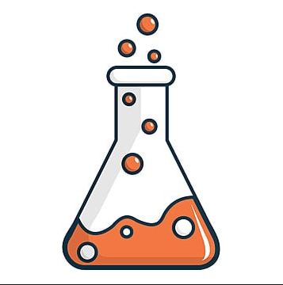
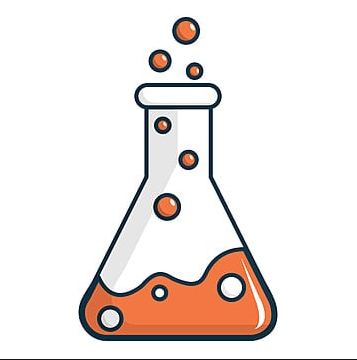

BioCheX - Hoá Sinh trong đời sống
Lưu ý trước khi đo không được ăn quá no, không căng thẳng, không vận động mạnh, đo sau khi ăn trên 2 tiếng
Mức độ chỉ số huyết áp và nhịp tim hiện tại:
Biểu hiện cơ thể:
Cách sơ cứu nhanh vời thời điểm huyết áp và nhịp tim bất ổn